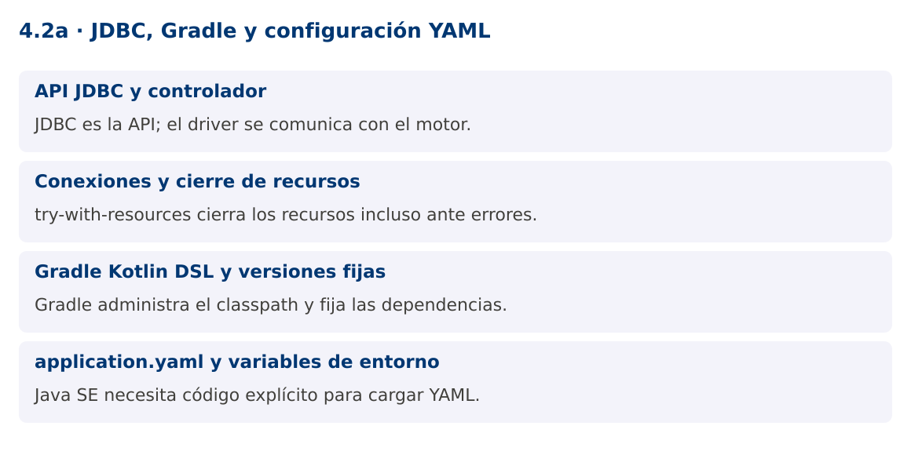

Programación Aplicada
4.2a. JDBC, Gradle y configuración YAML

Autor: Ing. Pablo Torres, Mgtr.
Unidad: 4. Conexión a bases de datos
Proyecto de trabajo: CampusMonitor
Inicio del curso · Presentación editable · Ver en el navegador
1. Conceptos y ejemplos
Contexto
CampusMonitor debe sustituir datos en memoria por consultas a PostgreSQL. En este punto aparecen un controlador JDBC y una biblioteca de configuración, por lo que Gradle pasa a gestionar versiones y ejecución.
Antes de empezar
Recupera el avance de 4.1. Conserva sus comandos y evidencias. Revisa el ejemplo completo antes de implementar la PC. Las demostraciones del material se ejecutan separadas del proyecto personal.
1.1. API JDBC y controlador
JDBC define interfaces estándar como Connection, PreparedStatement y ResultSet. El controlador implementa la comunicación con un motor concreto. El driver PostgreSQL se declara como dependencia de ejecución en Gradle. Los controladores JDBC modernos se registran mediante el mecanismo de servicios, por lo que normalmente no hace falta Class.forName.
Una URL JDBC identifica el controlador y el destino. jdbc:postgresql://localhost:5432/campus describe motor, host, puerto y base. No es una URL web. Usuario, contraseña, conectividad, permisos y configuración TLS deben corresponder al servidor. Una URL correcta no garantiza acceso a una base existente.
1.2. Conexiones y cierre de recursos
Connection representa una sesión con el motor. Abrir y cerrar una conexión por cada registro puede ser costoso. Para esta introducción se utiliza una conexión por operación o lote, siempre con try-with-resources. Más adelante puede emplearse un pool, manteniendo el mismo principio de devolver la conexión al terminar.
No compartas indiscriminadamente una Connection entre hilos. Su estado transaccional y sus operaciones pueden interferir. Connection, Statement y ResultSet tienen ciclos de vida relacionados. Cierra primero resultados y sentencias y después la conexión; la estructura anidada de try-with-resources hace visible ese orden.
1.3. Gradle Kotlin DSL y versiones fijas
build.gradle.kts declara plugins, repositorios, toolchain y dependencias. La toolchain fija Java 25 para compilar y ejecutar los ejemplos. El Gradle Wrapper permite usar la misma versión de Gradle en todos los equipos, sin depender de una instalación global después de generarlo.
Las unidades iniciales pueden ejecutarse con java ruta/ClaseDemo.java porque solo utilizan el JDK. Desde esta unidad, el driver y YAML requieren un classpath gestionado. Las versiones están fijadas y se incluye un documento de versiones verificadas. No uses rangos latest ni actualices dependencias durante una entrega sin volver a comprobar compatibilidad.
1.4. application.yaml y variables de entorno
Java SE no carga application.yaml automáticamente. La clase Config del proyecto lee ese recurso utilizando SnakeYAML Engine y extrae valores escalares. El programa combina configuración base con variables PAP_DB_URL, PAP_DB_USER y PAP_DB_PASSWORD. No se incluye la contraseña en el repositorio.
El ejemplo verifica tipos y propiedades obligatorias y muestra el motor conectado sin imprimir secretos. Los límites del parser restringen alias y tamaño. No interpreta etiquetas para construir clases arbitrarias. El nombre application.yaml es una convención del proyecto, no implica que la aplicación use Spring Boot.
Mapa de conceptos

2. Demostración guiada
2.1. Problema y contrato
CampusMonitor debe sustituir datos en memoria por consultas a PostgreSQL. En este punto aparecen un controlador JDBC y una biblioteca de configuración, por lo que Gradle pasa a gestionar versiones y ejecución.
La implementación siguiente es una demostración resuelta. La PC de la sección 3 requiere desarrollar una ampliación propia sobre CampusMonitor.
Archivo completo: JdbcDemo.java.
package edu.ups.pap.u04;
import edu.ups.pap.comun.Config;
import java.sql.*;
public class JdbcDemo {
public static void main(String[] args) throws SQLException {
try (Connection c = Config.abrir()) {
DatabaseMetaData meta = c.getMetaData();
System.out.println("Motor: " + meta.getDatabaseProductName());
try (PreparedStatement p = c.prepareStatement("SELECT 1 AS estado");
ResultSet r = p.executeQuery()) {
if(r.next()) System.out.println("Conexión: " + r.getInt("estado"));
}
}
}
}
Dependencia compartida: Config.java. El archivo contiene la implementación completa y se compila junto con los ejemplos.
2.2. Ejecución
Con el proyecto Gradle de demostraciones:
cd demostraciones
./gradlew runDemo -Pdemo=4.2a
En Windows usa gradlew.bat. Ejecuta cada demostración desde una terminal nueva o vuelve a la raíz antes de cambiar de contenido.
2.3. Resultado y lectura de la ejecución
Con la configuración de demostración: Motor: H2 y Conexión: 1. Con PAP_DB_URL configurada a PostgreSQL muestra Motor: PostgreSQL.
- Identifica los datos iniciales y las precondiciones que la demostración valida.
- Sigue las llamadas desde
mainoloopy relaciona las operaciones con los conceptos de la sección 1. - Contrasta el resultado con la salida esperada del ejemplo. Si el orden es concurrente, compara la invariante y no el orden de impresión.
- Cambia un dato del ejemplo y predice el resultado antes de ejecutarlo. Registra cualquier diferencia y su causa.
3. PC4.2a · Práctica de clase
3.1. Ampliación del proyecto
Esta actividad se resuelve en tu repositorio icc-pap-campusmonitor-apellido. Mantén la funcionalidad anterior. No reemplaces tu solución con los archivos de demostración del material.
- Migra CampusMonitor a Gradle Kotlin DSL conservando los paquetes y PCs anteriores. Incorpora el Wrapper y fija Java 25.
- Implementa configuración YAML con sustitución explícita por variables de entorno y prueba una conexión PostgreSQL. No subas contraseñas.
- Agrega un comando diagnostico-bd que consulte metadatos y ejecute SELECT 1. Diferencia error de configuración y SQLException.
3.2. Comprobación y evidencia
Prueba los casos de esta sección y registra entradas, salida real y explicación. Incluye una ejecución normal y un caso de error. La evidencia debe permitir repetir el resultado desde el commit entregado.
| Caso que debes revisar | Comportamiento requerido |
|---|---|
| Configuración PostgreSQL válida | SELECT 1 responde |
| Contraseña incorrecta | Error de autenticación sin revelar secreto |
| application.yaml ausente | Error claro de configuración |
En evidencias/PC4.2a.md agrega: cambio realizado, archivos principales, comandos de ejecución, tabla de pruebas y enlace al commit final. No añadas una rúbrica a esta PC.
3.3. Commits de la actividad
git status
git add src evidencias
git commit -m "feat(pc4.2a): jdbc-gradle-y-configuracion-yaml"
git push
git log -1 --format=%H
Ajusta las rutas de git add a los archivos que realmente creaste. Incluye también configuración o SQL si cambiaste esos archivos. El último comando muestra el hash real que debes enlazar en tu evidencia.
Lo esencial
- JDBC es la API; el driver se comunica con el motor.
- try-with-resources cierra los recursos incluso ante errores.
- Gradle administra el classpath y fija las dependencias.
- Java SE necesita código explícito para cargar YAML.